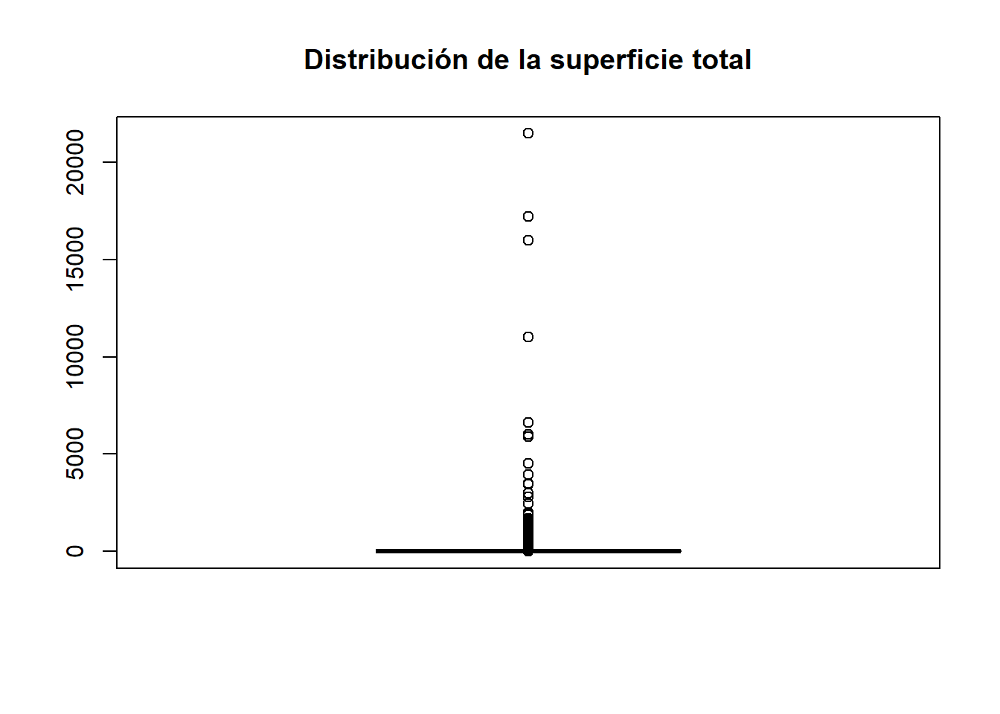

library(haven)
library(dplyr)
library(here)
sunac <- read_sav(
here(
"datos",
"original",
"ESPAC_2025",
"spss",
"sunac2025.sav"
)
)14 Limpieza de datos
Objetivos de aprendizaje
Al finalizar este capítulo, el lector será capaz de:
- Comprender la importancia de la limpieza de datos dentro de una investigación reproducible.
- Diagnosticar problemas de calidad en una base de datos.
- Identificar valores perdidos, registros duplicados y valores extremos.
- Trabajar con variables etiquetadas provenientes de SPSS.
- Documentar transformaciones realizadas sobre los datos.
- Construir una base de datos procesada lista para el análisis estadístico.
14.1 Introducción
Una de las ideas más extendidas entre estudiantes e investigadores noveles consiste en pensar que la limpieza de datos equivale a corregir errores o eliminar observaciones problemáticas. Sin embargo, la realidad es mucho más compleja. Limpiar datos no significa modificar los datos hasta que “se vean bien”; significa identificar, documentar y justificar cada transformación realizada.
La limpieza de datos constituye un proceso sistemático orientado a comprender la estructura de una base de datos, identificar posibles inconsistencias y documentar las transformaciones necesarias para preparar la información para su análisis posterior (Dasu & Johnson, 2003; Wickham, 2014).
En investigación reproducible, ninguna modificación debe realizarse sin dejar evidencia de las decisiones tomadas. Por esta razón, la limpieza de datos no es únicamente una actividad técnica, sino también un ejercicio de transparencia metodológica (Gandrud, 2015; Peng, 2011).
A lo largo de este capítulo trabajaremos con información real de la Encuesta de Superficie y Producción Agropecuaria Continua (ESPAC) 2025.
14.2 ¿Por qué limpiar datos?
Diversos estudios han demostrado que una parte importante del tiempo invertido en proyectos de análisis de datos se concentra en actividades relacionadas con la preparación de la información (Dasu & Johnson, 2003).
Antes de estimar modelos estadísticos o construir indicadores es necesario verificar:
- La integridad de los registros.
- La consistencia de las variables.
- La presencia de valores perdidos.
- La existencia de registros duplicados.
- La presencia de valores extremos.
- La correcta codificación de categorías.
Cuando estas verificaciones no se realizan adecuadamente, los resultados obtenidos pueden conducir a interpretaciones erróneas.
14.3 Calidad de datos e investigación reproducible
La calidad de los datos constituye uno de los pilares fundamentales de la investigación científica.
Una base de datos de alta calidad debe presentar:
- Completitud.
- Consistencia.
- Exactitud.
- Trazabilidad.
- Documentación adecuada.
La reproducibilidad requiere que todas las transformaciones realizadas sobre la información puedan ser reconstruidas posteriormente (Wilson et al., 2017).
Por esta razón, nunca se recomienda modificar manualmente una base de datos descargada desde una fuente oficial.
14.4 Cargando la base de trabajo
Trabajaremos con el módulo de uso del suelo de la ESPAC 2025.
14.5 Diagnóstico inicial de la base
Antes de limpiar una base de datos es necesario comprender sus dimensiones generales.
library(knitr)
data.frame(
Registros = nrow(sunac),
Variables = ncol(sunac)
) |>
kable()| Registros | Variables |
|---|---|
| 84538 | 30 |
La ESPAC contiene decenas de miles de observaciones y múltiples variables asociadas al uso del suelo, tenencia y superficie agropecuaria.
14.6 Exploración general de la base
Una primera inspección puede realizarse mediante:
summary(sunac) Identificador ual_prov ual_estr ual_segm
Length :84538 Length :84538 Length :84538 Length :84538
N.unique :38228 N.unique : 24 N.unique : 20 N.unique : 4683
N.blank : 0 N.blank : 0 N.blank : 0 N.blank : 0
Min.nchar: 17 Min.nchar: 2 Min.nchar: 2 Min.nchar: 5
Max.nchar: 17 Max.nchar: 2 Max.nchar: 2 Max.nchar: 5
al_ncues su_numl rc_clacul su_numt
Length :84538 Min. : 1.000 Min. :400.0 Min. : 1.000
N.unique : 2828 1st Qu.: 1.000 1st Qu.:754.0 1st Qu.: 1.000
N.blank : 0 Median : 2.000 Median :954.0 Median : 2.000
Min.nchar: 4 Mean : 2.249 Mean :819.7 Mean : 2.249
Max.nchar: 4 3rd Qu.: 3.000 3rd Qu.:962.0 3rd Qu.: 3.000
Max. :51.000 Max. :962.0 Max. :51.000
su_k202ha su_categoria su_tenencia ual_trs
Min. : 0.01 Min. : 1.000 Min. : 1.000 Min. :1
1st Qu.: 0.11 1st Qu.: 3.000 1st Qu.: 1.000 1st Qu.:1
Median : 0.66 Median : 6.000 Median : 1.000 Median :1
Mean : 142.37 Mean : 6.058 Mean : 1.741 Mean :1
3rd Qu.: 3.10 3rd Qu.:10.000 3rd Qu.: 1.000 3rd Qu.:1
Max. :518000.00 Max. :10.000 Max. :10.000 Max. :1
NAs :33804
ual_trc ual_tro ual_znd ual_tn
Min. :2 Min. :3 Min. :5 Min. :4
1st Qu.:2 1st Qu.:3 1st Qu.:5 1st Qu.:4
Median :2 Median :3 Median :5 Median :4
Mean :2 Mean :3 Mean :5 Mean :4
3rd Qu.:2 3rd Qu.:3 3rd Qu.:5 3rd Qu.:4
Max. :2 Max. :3 Max. :5 Max. :4
NAs :59680 NAs :75780 NAs :84350
us_k301ha us_k302ha us_k303ha us_k304ha
Min. :3.000e-04 Min. : 0.00000 Min. : 0.0004 Min. : 0.00020
1st Qu.:3.212e-01 1st Qu.: 0.06897 1st Qu.: 0.1620 1st Qu.: 0.08815
Median :9.011e-01 Median : 0.17075 Median : 0.5707 Median : 0.22860
Mean :1.273e+01 Mean : 1.38282 Mean : 2.3612 Mean : 1.72782
3rd Qu.:2.307e+00 3rd Qu.: 0.46395 3rd Qu.: 1.6663 3rd Qu.: 0.68905
Max. :2.147e+04 Max. :900.00000 Max. :330.0000 Max. :292.91000
NAs :72205 NAs :77666 NAs :79836 NAs :81666
us_k305ha us_k306ha us_k307ha us_k308ha
Min. : 0.0004 Min. : 0.0002 Min. : 0.0091 Min. :9.000e-04
1st Qu.: 0.1853 1st Qu.: 0.1208 1st Qu.: 0.4943 1st Qu.:5.812e-01
Median : 0.7802 Median : 0.3488 Median : 2.0861 Median :2.080e+00
Mean : 8.9102 Mean : 2.3498 Mean : 26.1105 Mean :1.656e+01
3rd Qu.: 3.2149 3rd Qu.: 1.1167 3rd Qu.: 7.3557 3rd Qu.:7.197e+00
Max. :1500.0000 Max. :600.0000 Max. :1900.0000 Max. :1.103e+04
NAs :71094 NAs :78119 NAs :84182 NAs :73614
us_k309ha us_k310ha us_transiha us_montesha
Min. : 0.0021 Min. :2.000e-04 Min. : 0.0000 Min. :9.000e-04
1st Qu.: 0.1909 1st Qu.:2.190e-02 1st Qu.: 0.0881 1st Qu.:5.001e-01
Median : 0.6368 Median :6.970e-02 Median : 0.2530 Median :1.877e+00
Mean : 10.2105 Mean :2.749e+00 Mean : 1.7803 Mean :1.589e+01
3rd Qu.: 3.0514 3rd Qu.:3.252e-01 3rd Qu.: 0.8591 3rd Qu.:6.734e+00
Max. :1200.0000 Max. :1.600e+04 Max. :900.0000 Max. :1.103e+04
NAs :83248 NAs :59212 NAs :72964 NAs :72324
supertotal fact_exp_fin
Min. :0.000e+00 Min. : 0.00
1st Qu.:8.160e-02 1st Qu.: 64.92
Median :3.739e-01 Median : 65.80
Mean :6.984e+00 Mean : 63.55
3rd Qu.:1.649e+00 3rd Qu.: 67.70
Max. :2.147e+04 Max. :10378.25
El resumen estadístico permite identificar:
- Variables numéricas.
- Valores extremos.
- Rangos de observación.
- Posibles valores perdidos.
También podemos obtener una visión estructural de la base.
glimpse(sunac)Rows: 84,538
Columns: 30
$ Identificador <chr> "01135101000330001", "01135101000330001", "0113510100033…
$ ual_prov <chr+lbl> "01", "01", "01", "01", "01", "01", "01", "01", "01"…
$ ual_estr <chr> "01", "01", "01", "01", "01", "01", "01", "01", "01", "0…
$ ual_segm <chr> "00033", "00033", "00033", "00033", "00103", "00103", "0…
$ al_ncues <chr> "0001", "0001", "0001", "9999", "0001", "0001", "0002", …
$ su_numl <dbl> 1, 2, 3, 1, 1, 2, 1, 2, 1, 2, 3, 4, 5, 6, 7, 8, 9, 10, 1…
$ rc_clacul <dbl+lbl> 958, 958, 962, 962, 410, 958, 410, 958, 478, 751, 78…
$ su_numt <dbl> 1, 2, 3, 1, 1, 2, 1, 2, 1, 2, 3, 4, 5, 6, 7, 8, 9, 10, 1…
$ su_k202ha <dbl> 9.00, 9.00, 9.00, 0.40, 5.50, 1.50, 4.00, 3.00, 0.19, 0.…
$ su_categoria <dbl+lbl> 8, 8, 10, 10, 1, 8, 1, 8, 1, 5, 5, 5, 5, …
$ su_tenencia <dbl+lbl> 1, 1, 1, 1, 1, 1, 1, 1, 1, 1, 1, 1, 1, 1, 1, 1, 1, 1…
$ ual_trs <dbl+lbl> 1, 1, 1, 1, 1, 1, 1, 1, 1, 1, 1, 1, 1, 1, 1, 1, 1, 1…
$ ual_trc <dbl+lbl> NA, NA, NA, NA, NA, NA, NA, NA, NA, NA, NA, NA, NA, …
$ ual_tro <dbl+lbl> NA, NA, NA, NA, NA, NA, NA, NA, NA, NA, NA, NA, NA, …
$ ual_znd <dbl+lbl> NA, NA, NA, NA, NA, NA, NA, NA, NA, NA, NA, NA, NA, …
$ ual_tn <dbl+lbl> 4, 4, 4, 4, 4, 4, 4, 4, 4, 4, 4, 4, 4, 4, 4, 4, 4, 4…
$ us_k301ha <dbl> NA, NA, NA, NA, 2.5763, NA, 3.3235, NA, 0.1819, NA, NA, …
$ us_k302ha <dbl> NA, NA, NA, NA, NA, NA, NA, NA, NA, NA, NA, NA, NA, NA, …
$ us_k303ha <dbl> NA, NA, NA, NA, NA, NA, NA, NA, NA, NA, NA, NA, NA, NA, …
$ us_k304ha <dbl> NA, NA, NA, NA, NA, NA, NA, NA, NA, NA, NA, NA, NA, NA, …
$ us_k305ha <dbl> NA, NA, NA, NA, NA, NA, NA, NA, NA, 0.0932, 0.0921, 0.04…
$ us_k306ha <dbl> NA, NA, NA, NA, NA, NA, NA, NA, NA, NA, NA, NA, NA, NA, …
$ us_k307ha <dbl> NA, NA, NA, NA, NA, NA, NA, NA, NA, NA, NA, NA, NA, NA, …
$ us_k308ha <dbl> 2.7616, 0.7581, NA, NA, NA, 0.8191, NA, 2.2811, NA, NA, …
$ us_k309ha <dbl> NA, NA, NA, NA, NA, NA, NA, NA, NA, NA, NA, NA, NA, NA, …
$ us_k310ha <dbl> NA, NA, 5.1941, 0.2862, NA, NA, NA, NA, NA, NA, NA, NA, …
$ us_transiha <dbl> NA, NA, NA, NA, NA, NA, NA, NA, NA, NA, NA, NA, NA, NA, …
$ us_montesha <dbl> 2.7616, 0.7581, NA, NA, NA, 0.8191, NA, 2.2811, NA, NA, …
$ supertotal <dbl> 2.7616, 0.7581, 5.1941, 0.2862, 2.5763, 0.8191, 3.3235, …
$ fact_exp_fin <dbl> 66.37009, 66.37009, 66.37009, 66.37009, 66.37009, 66.370…Esta función muestra el tipo de dato de cada variable y facilita la identificación de variables categóricas, continuas y etiquetadas.
14.7 Observaciones y unidades de análisis
Uno de los errores más frecuentes consiste en asumir que cada fila representa una unidad productiva independiente.
Verifiquemos esta situación.
nrow(sunac)[1] 84538length(unique(sunac$Identificador))[1] 38228La primera cifra representa el número total de registros.
La segunda representa el número de identificadores únicos.
Si ambas cantidades son diferentes, significa que una misma unidad productiva puede aparecer varias veces dentro de la base.
Esto ocurre en la ESPAC porque un productor puede registrar múltiples usos del suelo dentro de una misma unidad de producción agropecuaria.
14.8 Identificando registros por productor
Podemos examinar cuántas veces aparece cada identificador.
sunac |>
count(Identificador) |>
arrange(desc(n)) |>
head(10)# A tibble: 10 × 2
Identificador n
<chr> <int>
1 06065004000940022 51
2 21045160000990001 34
3 21015802011420001 29
4 17015463000993667 25
5 08056060000990008 23
6 06035004000430001 22
7 08055760000990086 21
8 01015103004380004 20
9 04016101050450002 20
10 18015501047960004 20La existencia de múltiples registros por identificador no implica necesariamente un error.
Antes de eliminar registros es indispensable comprender la estructura metodológica de la encuesta (Groves et al., 2009).
14.9 Valores perdidos
Los valores perdidos constituyen una característica habitual de las bases de datos reales.
Podemos cuantificarlos mediante:
na_variables <- colSums(is.na(sunac))
sort(
na_variables,
decreasing = TRUE
)[1:10] ual_znd us_k307ha us_k309ha us_k304ha us_k303ha us_k306ha
84350 84182 83248 81666 79836 78119
us_k302ha ual_tro us_k308ha us_transiha
77666 75780 73614 72964 El resultado muestra las variables con mayor cantidad de valores perdidos.
Sin embargo, no todos los valores perdidos representan errores.
14.10 ¿Todos los NA son errores?
La respuesta es no.
En encuestas complejas muchas preguntas solamente aplican a determinados productores.
Por ejemplo:
- Variables relacionadas con bosques únicamente aplican a productores que poseen bosque.
- Variables relacionadas con determinados cultivos solo aplican a quienes desarrollan esas actividades.
- Variables pecuarias únicamente aplican a productores pecuarios.
Por esta razón, numerosos NA representan respuestas estructuralmente inexistentes y no errores de captura (Groves et al., 2009).
14.11 Perfil de valores perdidos
Podemos calcular el porcentaje de valores perdidos por variable.
porcentaje_na <- round(
colMeans(is.na(sunac)) * 100,
2
)
sort(
porcentaje_na,
decreasing = TRUE
)[1:10] ual_znd us_k307ha us_k309ha us_k304ha us_k303ha us_k306ha
99.78 99.58 98.47 96.60 94.44 92.41
us_k302ha ual_tro us_k308ha us_transiha
91.87 89.64 87.08 86.31 Esta información resulta útil para evaluar la calidad y cobertura de cada variable.
14.12 Variables etiquetadas provenientes de SPSS
Una característica importante de las bases importadas mediante haven es la conservación de etiquetas.
Por ejemplo:
class(sunac$su_tenencia)[1] "haven_labelled" "vctrs_vctr" "double" La salida muestra que la variable fue importada como:
haven_labelledEsto significa que conserva las etiquetas originales definidas por el INEC.
Podemos examinarlas.
attributes(sunac$su_tenencia)$labels DUEÑO ARRENDATARIO APARCERÍA O AL PARTIR
1 2 3
COMUNERO INVASIÓN LITIGIO
4 5 6
HERENCIA USUFRUCTO POSECIÓN
7 8 9
OTRO
10 Estas etiquetas permiten interpretar adecuadamente las categorías originales.
14.13 Conversión de variables etiquetadas
Para facilitar el análisis estadístico transformaremos la variable a factor.
sunac <- sunac |>
mutate(
su_tenencia =
haven::as_factor(su_tenencia)
)Verificamos el resultado.
class(sunac$su_tenencia)[1] "factor"Ahora la variable puede utilizarse fácilmente en tablas y gráficos.
14.14 Distribución de la forma de tenencia
Una vez convertida la variable podemos examinar su distribución.
sunac |>
count(su_tenencia) |>
arrange(desc(n))# A tibble: 10 × 2
su_tenencia n
<fct> <int>
1 DUEÑO 71391
2 HERENCIA 5695
3 ARRENDATARIO 2815
4 USUFRUCTO 1150
5 COMUNERO 1038
6 OTRO 1020
7 APARCERÍA O AL PARTIR 789
8 LITIGIO 286
9 POSECIÓN 222
10 INVASIÓN 132Esta tabla permite identificar cuáles son las formas predominantes de tenencia de la tierra registradas por la encuesta.
14.15 Detección de registros duplicados
Podemos verificar si existen registros completamente duplicados.
sum(duplicated(sunac))[1] 0En caso de existir duplicados exactos, será necesario evaluar si corresponden a errores de captura o a características propias de la estructura de la base.
14.16 Detección de valores extremos
Los valores extremos constituyen otra fuente frecuente de preocupación.
Analicemos la variable relacionada con superficie.
summary(sunac$su_k202ha) Min. 1st Qu. Median Mean 3rd Qu. Max.
0.01 0.11 0.66 142.37 3.10 518000.00 Esta salida permite identificar:
- Valor mínimo.
- Cuartiles.
- Mediana.
- Media.
- Valor máximo.
Los valores extremos no deben eliminarse automáticamente.
Primero deben contrastarse con la documentación metodológica y el contexto de estudio (Wilson et al., 2017).
14.17 Explorando la superficie total
Analicemos la variable de superficie total.
summary(sunac$supertotal) Min. 1st Qu. Median Mean 3rd Qu. Max.
0.000e+00 8.160e-02 3.739e-01 6.984e+00 1.649e+00 2.147e+04 Los resultados permiten identificar la dispersión de la información y posibles observaciones atípicas.
14.18 Visualización de valores extremos
Los diagramas de caja permiten identificar observaciones alejadas del comportamiento general.
boxplot(
sunac$supertotal,
main = "Distribución de la superficie total"
)
Los puntos alejados de la caja representan posibles valores extremos.
La presencia de estos valores no implica necesariamente errores.
14.19 Identificación de observaciones extremas
Podemos localizar las observaciones con mayores superficies.
sunac |>
arrange(desc(supertotal)) |>
select(
Identificador,
supertotal
) |>
head(10)# A tibble: 10 × 2
Identificador supertotal
<chr> <dbl>
1 09105056000993426 21469.
2 09235056000993424 17214.
3 14045264000994192 16000
4 12015552000990149 11030
5 21045160000990001 6636.
6 14015364000991633 6000
7 08055460000990006 5877.
8 03045056000993427 5874
9 08055760000990004 4500
10 10015056000993442 3953 Este procedimiento facilita la revisión individual de observaciones potencialmente atípicas.
14.20 Construcción de una base procesada
Una vez completado el diagnóstico inicial podemos almacenar una versión procesada de la base.
saveRDS(
sunac,
here(
"datos",
"procesado",
"ESPAC_2025",
"sunac_limpio.rds"
)
)La conservación de versiones procesadas evita repetir tareas y garantiza trazabilidad sobre los cambios realizados (Gandrud, 2015).
14.21 Documentando transformaciones
Toda modificación realizada sobre una base de datos debe quedar documentada.
Entre las transformaciones más frecuentes se encuentran:
- Conversión de variables etiquetadas.
- Recodificación de categorías.
- Creación de indicadores.
- Corrección de errores identificados.
- Generación de nuevas variables.
La documentación constituye un requisito fundamental para garantizar la reproducibilidad científica (Peng, 2011).
14.22 Buenas prácticas de limpieza
Durante el proceso de limpieza se recomienda:
- Mantener intactos los archivos originales.
- Documentar cada transformación.
- Conservar versiones intermedias.
- Revisar la documentación metodológica.
- Evitar eliminar observaciones sin justificación.
- Verificar resultados después de cada modificación.
- Utilizar scripts reproducibles.
Estas prácticas fortalecen la transparencia y calidad del análisis.
14.23 Manos a la obra
Utilizando la base sunac2025.sav:
- Determine cuántos registros y variables contiene la base.
- Calcule el número de identificadores únicos.
- Identifique las diez variables con más valores perdidos.
- Transforme
su_tenenciaa factor. - Construya una tabla de frecuencias para la variable de tenencia.
- Identifique los diez registros con mayor superficie total.
- Guarde una versión limpia de la base en formato RDS.
Documente cada paso dentro de un archivo Quarto.
14.24 Resumen del capítulo
La limpieza de datos constituye una etapa fundamental de la investigación reproducible. Su propósito no consiste únicamente en corregir errores, sino en comprender la estructura de los datos, diagnosticar problemas potenciales y documentar adecuadamente las transformaciones realizadas.
A través de la ESPAC 2025 aprendimos a evaluar la calidad de una base de datos, identificar valores perdidos, interpretar variables etiquetadas, detectar valores extremos y construir versiones procesadas listas para análisis posteriores.
En el siguiente capítulo aprenderemos a transformar datos para construir variables analíticas, indicadores y estructuras de información orientadas a responder preguntas de investigación.